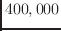

Next: Ernst Up: Notes on the Scores Previous: Vespers (1968)
The text-score for this piece attributes its inspiration to the work of two individuals: Ernst Florens Friedrich Chladni, and Hans Jenny. The first volume of Jenny's book, "Cymatics," which had just been published in 1967, combined absolutely stunning color photographs of phenomena produced by vibration. Jenny's work was also heavily influenced by Chladni, who in the early 19th century became famous because of his methods for visualizing acoustic modes. Jenny passed away the year Lucier wrote the piece.
In his interview about the piece in ``Reflections,'' he gives no clues about the rich imagery he embeds into his score, which is consistent with his remarks to Tenney. Regardless, in the text, Lucier gives us the setting, with a whimsical tone of voice that reflects what is probably earnest excitement. The list is almost alchemical in its word choice:

Here, he is echoing many of the elements Jenny catalogs, in the pages of ``Cymatics,'' to describe his methods.[16] The longest paragraph in the score informs us that we have a choice: we could either improvise with the system, or we could follow the imagery that results from the sound.
joe 2014-01-09